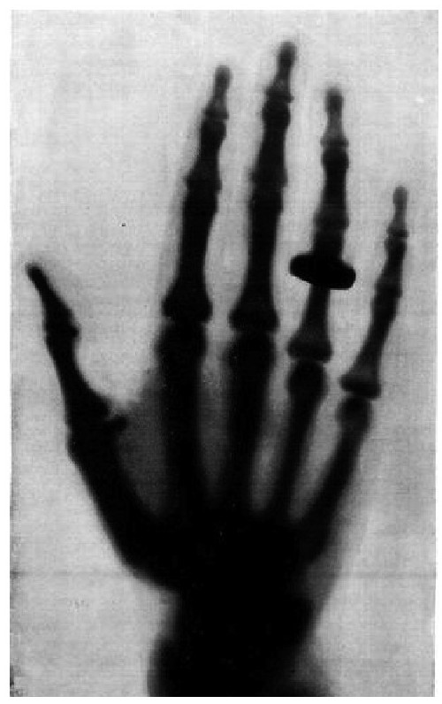

——路易·巴斯德[157]
伟大的发明和发现可能源自一句惊叫“啊哈！”但有时，这一惊叫可能是由于哪里出错，或是有不明缘由的事情发生——如实验室别的实验成分的干扰，或是新产品及时上市，又或者只是实验出错。
化学家苦心研究分子键长达数世纪之后才逐渐了解分子键结合的原因和原理。20世纪之前，他们对共价电子一无所知，因为他们不知道什么是电子。然而，由于清楚了解原子和分子如何相互作用和转换，进而生成新的化合物，他们能完成神奇的化学实验。他们能分析分子反应，分析在热和光的条件下的转化过程，他们甚至能在不了解电子在分子键生成过程中的关键作用的情况下，配制出含有聚合物和金属合金的络合物。他们明白，不同气体在比例均衡的情况下将发生反应。但他们从不知道电子与这些化学反应和分子键有重要关系。
他们是科学领域不同寻常之人，碰巧发现很多巧合现象，并且明智地认为它们是解答一些重大问题的关键线索。他们认为，意外现象和目标明确的研究假设对科学发现同样有用。他们还告诉我们，科学观察中的偶然事件能极大影响我们观察世界的思维方式，从而使世界变得更好。这样的事例有很多。如威廉·珀金斯的意外染色使我们对免疫学和化疗有了了解；亚历山大·弗莱明、霍华德·弗洛里和恩斯特·钱恩在工作中发现青霉素，因为他们不爱收拾实验室，导致葡萄球菌培养菌被周围的真菌感染破坏；还有抗疟疾药物、天花接种疫苗、胰岛素、糖精、阿司匹林等巧合故事。另外还有阿兰·图灵、拉尔夫·特斯特和其他本奇利公园工作站的第二次世界大战密码专家，他们破解了决定战争胜负的德国恩尼格码密码，这些都是天才，但多亏了德国的密码编码有几处出错，英国破译员才得以找出德国密码机的工作原理。他们的发现不仅帮助盟国赢得战争，而且推动了世界上第一台可部分编程计算机的发明。
1869年，德米特里·门捷列夫梦见他根据原子量列出了化学元素周期表。[158]第二天早晨醒来他制作出了元素周期表。当时国家气象部门开始收集有关温度、降水量以及其他任何可信的气候数据。在那个年代，化学和原子无关。约一百年前，当安托万·拉瓦锡发现氧气在燃烧中的作用，并确定质量永远不变，化学已经确定了它的科学根基。然而，1869年，当门捷列夫首次发表元素周期表时，化学实验还在黑暗中摸索，原子的内部结构仍不为人知。同年瑞士医师弗里德里希·米歇尔从手术绷带上残留的脓液中分离出了DNA。当时米歇尔也是瞎打误撞，他并不知道DNA是载有基因信息的遗传分子，但是它确实为了解DNA这一遗传载体铺平了道路。当时生活比较简单，虽然铁路将整个欧洲和俄罗斯各个城市都连在一起，但是国家之间的旅行还不是非常容易。圣彼得堡——著名的“永昼节”举办地，时尚娱乐之都，富人贵族云集之地，是门捷列夫生活和工作的地方，但该地也人满为患，市民营养不良，水污染严重，卫生条件差，各种疾病恶化得不到救治。[159]
就在当时许多物理学家正在试验克鲁克斯阴极射线管，这是一种半真空吹制玻璃管，管内两端电极相连。实验目的在于了解管内发光的原理。我们现在知道高电压穿过空气稀薄的克鲁克斯放电管的结果。少量正搜寻电子的带电气体分子（正离子）被激活，与其他气体分子碰撞，击中一些电子，产生了更多的正离子。接着正离子被吸引到带负电的终端。当正离子撞到金属端表面时，击中了大量电子。当被正离子端吸引，负离子将穿过管道，形成一束发光的电子射线，即阴极射线。在30多年的实验中，科学家们尝试使用不同的气体，但却无法解释这一现象。他们对带负电荷的粒子——气体原子内的电子——一无所知。他们也不知道光从何来。实验偶然出现的一些新情况他们也无法解释。有的玻璃管发出红色光，有的是绿色光。他们根本不知道这现象背后的原因。例如，他们不知道在半真空环境中，许多质量小的电子被正极吸引，以内置的动量和速度直接通向正极。电子越接近正极，吸引力就越大。我们现在知道朝正极移动的电子速度接近光速。有些电子会跃过正极终端，撞击玻璃管原子，瞬间提高了管中电子的能量水平，然后再恢复到原有的能级。在回落时将会发射出光的基本粒子（光子），因此玻璃管会发出绿黄色的光。
X射线荧光是一种电磁辐射光，过程更复杂。威廉·康拉德·伦琴在半真空的玻璃管中进行电流实验时意外发现了X射线。他当时碰巧在实验室放置了一块涂有氰亚铂酸钡（荧光材料）的荧光屏，用于做另外一个实验。如果没有那个屏幕，谁知道会有多少人会因X光及其用途的延迟发现而更早失去生命。伦琴当时并没有注意远处那块荧光屏，只是眼角无意一瞥，因为他不认为它和实验有任何关系。实验出现了预期之外的无关结果。这是一次巧合，但却影响深远。
环顾维尔茨堡大学里伦琴的实验室，让时光回到1895年11月8日。[160]大窗外面是一条狭窄的街道，街道两边是挪威枫树，枫树的大部分叶子早已凋落。仅靠窗边排着一排高度不等的红木长桌。桌上摆着各种仪器、金属制品、电机、各种形状的烧瓶和线圈。墙上悬挂着一个摆钟，摆钟旁边架子上挂着长短不一的电线。桌上胡乱堆放着许多玻璃管。天花板上吊着一个透明的白炽灯泡，连接灯泡的电线低垂，电灯开关靠近墙上的挂钟。除此之外，房间内的其余地方几乎是空的。除了光线明亮之外，它与19世纪的其他化学实验室毫无差别。窗户没有窗帘。
在实验室的人是伦琴，50岁，头发乌黑浓密，胡子长又黑，且开始发灰。自1895年年初以来，他一直通过半真空玻璃管内静电打火进行电流实验。11月8日，他正进行阴极射线实验，发现玻璃管内出现一束光。阴极射线在半真空环境之外是看不见的，他很自然地想到一个问题：部分看不见的阴极射线从玻璃管中漏出来了吗？[161]为了阻止阴极射线的转移，或现场发现逃离到实验室房间的射线，他用纸板盖住了玻璃管，关掉房间的灯。荧光屏散发的光穿透了整个房间，通过控制玻璃管中的真空浓度和电流，可以调整荧光屏上光的亮度。光线很微弱，多次实验之后，结果仍然相同。即使将荧光屏移得更远，结果仍是一样。把实验室完全变黑，结果也是一样。将玻璃管再加一层隔离，结果仍然完全相同。荧光屏上闪烁的光只可能是玻璃管内电流产生的阴极射线。这意味着该光线透过防护罩，穿过空气，照亮了荧光屏。这是一种以前未被发现过的新型的未知射线。
由于笛卡儿引入x符号之后，该符号就用来代指数学中的未知数，伦琴决定把这种新型射线称为“X射线”。詹姆斯·克拉克·麦克斯韦和迈克尔·法拉第曾预测存在看不见的电磁波，它们能穿过一定距离的自由空间。在伦琴发现X射线的3年前，海因里希·赫兹实验证明阴极射线可以穿透薄金属箔。同时，赫尔曼·冯·赫姆赫兹正在求X射线的数学方程式，理论上假设真正的X射线确实存在并以光速运动。
设想当伦琴把手放在玻璃管和荧光屏之间试图阻挡光线，却看到荧光屏上自己手的骨骼时会是多么吃惊！一张骨骼图！他正在窥探自己的身体结构。从伦琴去世很久后的传记中我们了解到，他不是有意将手放在玻璃管和荧光屏之间。[162]这只是一个偶然。很可能他是第一个这样做的人。他试图用其他材料——木材、金属、纸、橡胶、书籍、布料、铂金和各种家庭用品来阻挡光线。有些物体允许射线自由穿过，有的阻止穿过。木制电线管的图像上只显示了电线，而线管的影子很模糊。在接下来的实验中，伦琴堆叠了厚度为0.0299 mm的铝箔来测试X射线的穿透性。他无法区分1张铝箔和31张铝箔之间的差别，X射线离氰亚铂酸钡荧光屏的距离相差不大也不会产生太大的差异。射线可以没有阻碍地通过生物组织，却没办法通过骨头或铅等金属，这是多么幸运的一件事。他们可以穿过木头，但不能穿过硬币。伦琴很快想到一个好主意——用照片底片代替荧光屏。他将X射线投射到装有一枚硬币的封闭木盒，这样就只拍到了硬币的图像，盒子好像不存在一样。伦琴还拍摄了他妻子柏莎的手。影像里可以清晰地看到她的指骨和手指上的戒指。经维也纳某报纸一刊登，这张照片很快家喻户晓。[163]这可能是有史以来第一张活人的手部结构图像。对于某些人来说，这是一个新奇的现象，而对于其他人来说，这是一个笑话。各种日报、周报、月报都争先刊登有关该照片的故事。《生活》杂志刊登了一张漫画，讽刺这种新型摄影极具想象力。[164]
《生活》杂志在接下来的一期中还刊登了一首讽刺诗。[165]
芭芭拉·戈德史密斯在她的著作《执着的天才》中写道：
伟大的科学发现都离不开前辈的研究，有的成果丰富，有的成果少。这些发现几乎都不是直接发生的。大多数人不停地反复尝试，其中有些人侥幸成功。他们或许开始是意外，但他们几乎总是——或总是——在某些假设或已知的理论的指导下，遵循明确的线索。这就是为什么我们没有理由怀疑如果没有荧光屏，伦琴就不会发现X射线。其他物理学家正在研究阴极射线的影响，可以肯定地说，19世纪末该领域的研究成果非常令人兴奋。英国物理学家威廉·克鲁克斯（半真空吹制玻璃管“克鲁克斯阴极射线管”以他的名字命名）本可以制造出来自阴极的辐射光，从而发现阴极射线，掀起阴极射线研究的狂潮。他采用凹面阴极聚焦阴极射线，可以获得足够的能量产生X射线，尽管这需要耗费大量热能。他觉得很奇怪，为什么存放在附近的一些未曝光的摄影底片变得模糊。没有多想，他把这些底片还给了厂家，说这些底片有缺陷。[167]1888年，菲利普·莱纳德用阴极射线管进行高频紫外线试验。如果他使用的射线管管内的真空浓度足够低，使用的电压再高一点，他就能生成足够的X射线，从而发现石英射线管外的荧光。遗憾的是当时真空压力不够低，电压不够高，因此他从未发现任何他制造出的X射线。
1838年，迈克尔·法拉第考虑到荧光的存在，当时他开始采用半真空玻璃管进行电势实验。从那以后，许多年轻的德国物理学家尝试了各种类型和形状的半真空玻璃管。他们在高电压下尝试了氖、氩，甚至汞蒸气。德国物理学家海因里希·盖斯勒1857年开始将金属电极加入半真空吹制玻璃瓶中，玻璃瓶发出了光。然而，在那些年，尽管所有这些聪明的科学家有着和伦琴一样的设备条件相对优越的大学实验室，却都没有发现X射线。他们只要偶然往远处看一眼，就能发现玻璃管不远处有一束微弱的光，那就是X射线。他们没有发现这种可以在玻璃管外产生微弱的光的短波长的电磁辐射。
我们永远无法知道我们曾差点延迟发现X射线，我们只能猜测（因为数据并不精准，无法提供证据），在伦琴发现X射线后的120年里，“X射线挽救的生命比子弹夺走的生命还要多”。[168]如果没有发现X射线，那么完全有可能至少在十年内都不会发现原子的内在性质，并且这一知识的空白将会导致连锁反应，使得很多伟大的发现都将会延迟。我们今天已经知道这些发现使我们的世界发生了翻天覆地的变化。关于伦琴发现X射线的故事传颂已久。伦琴很少接受采访，少数采访中最受推崇的报道之一来自《麦克卢尔》杂志科学记者H.J.W.达姆。[169]这篇报道文字优美，详细描述了伦琴、他的实验室和他的实验：
X射线的发现者平静地表示自己对它的本质一无所知，就像现在其他人提到X射线一样淡定。
其他报道清楚地提到正是碰巧放在不远处工作台上的氰亚铂酸钡涂层纸带来了这次意外发现。根据其他间接报道，氰亚铂酸钡屏幕放在工作台上，是因为伦琴认为它比其他荧光涂层更有效。[170]在1896年的维尔茨堡物理医学学会演讲中，伦琴谈到了他如何首先发现氰化铂酸钡涂层纸上的荧光；如何发现只有当电荷穿过被遮盖的克鲁克斯阴极管时荧光才出现；他还谈到即使将荧光涂层纸放置在距离更远的地方也会发生相同的现象。[171]然后他说：“我意外发现射线穿透了黑色硬纸板。于是我用木头、纸、书等遮盖物进行了实验，但我仍不相信这是真的。最后，我使用了照片，实验结果还是一样。”[172]1895年12月22日，全球各地的报纸都刊登了图12.1所示的照片。

图12.1 伦琴拍摄的一位女士的手的X光照片[注：图片来自《麦克卢尔》杂志1896年4月出版的第6卷第5期。照片由柏林电影《乌兰尼亚》导演斯派斯先生所摄。]
之后不久，这项技术被应用于医学，使医生能够看清人体内肿瘤、蛀牙、骨骼结构等，这些都无法通过常规手段观察得到。我们不太清楚伦琴是否知道他的技术对内科疾病的医学诊断所带来的重大价值。
他本想要继续回到先前荧光屏的实验，但是他全身心地投入到了X射线的实验中，没有再继续关注荧光屏的实验了。
19世纪末期，科学家们仍然对原子的内部结构一无所知。科学家发明电力已经好几百年了。他们知道如何发电。到1880年，伦敦、巴黎、美国和莫斯科的街道上闪烁着各种各样的白炽灯泡。科学家甚至知道了引力和能量无处不在。而从法拉第和麦克斯韦开始，他们发现了电磁波理论。但直到1897年发现电子，打破了原子是所有物质最小的结构这一古老概念。但电流是如何从电线的一点传输到另一点仍然是一个谜。一个世纪前化学已经发展比较完善，面对这一难解之谜化学所取得的成功是非常令人惊讶的。虽然阴极射线和X射线在理论上已经非常完善，但当时没有人真正“证明”它们的存在。前一句中的动词“证明”不一定意味着用诸如显微镜这样的仪器来发现它们。很多科学现象是无法用仪器观察到的。当时没人知道荧光电流是如何从克鲁克斯管的一端传到另一端的。
J.J.汤姆逊1897年的阴极射线实验表明，射线本身不是从一端传送到另一端的原子；它们是原子的物质成分。原子不再被认为是没有其他成分的实心球体。科学家预测原子中存在质子和电子，虽然无法看到它们，但可以从它们对设备造成的影响来检测。在1934年的一次采访中，汤姆逊曾夸张地说：“还有什么比这么小的物体第一眼看上去更不切实际的呢？它太小，质量只是一个氢原子质量微不足道的一小部分。但氢原子本身也小，即使将与全世界人口数量相等的氢原子集中在一起，当时的科学手段也无法发现它们。”[173]在接下来的几十年中，科学家们从最初的对原子、电子和质子的一无所知，到逐步探索物质世界的秘密，了解原子的内部机制。到1939年，人类发现核裂变，但直到今天，我们仍不清楚原子核的基本组成部分，只知道它由所谓的上夸克和下夸克粒子构成，每个粒子由许多更小的不断运动的物质组成，这些物质受强力紧密结合在一起。
科学史上有许多经典的意外科学发现：一名身患疟疾的南美洲印度人饮用了金鸡纳树（可从中提取奎宁）旁边的水，从而发现了抗疟疾药物奎宁；从在被摘除的狗的胰脏上飞舞的苍蝇上发现了胰岛素；笛卡儿躺在床上观察飞虫时发明了坐标几何。还有许多化学发明的故事比基础科学发现技术性更强。这些发明都值得嘉奖，但我们这里不作讨论，因为路易·巴斯德曾说过：“机遇偏爱有准备的头脑。”[174]并且，其中有些故事夸张离奇，与科学家最初记录的发现过程相距甚远，这是讲故事的惯用伎俩。任何伟大发现都离不开基础工作的累积。随着对科学发现过程的深入了解，你总会发现这些科学家都是站在很多巨人的肩膀上往前看。牛顿的这句名言——“如果我看得更远，那是因为我站在巨人的肩膀上”——也不是他原创的。牛顿确实在1676年给罗伯特·胡克的信中写了这句话。[175]但其真正的原创是12世纪的法国沙特尔市新柏拉图派哲学家伯纳德，他将他们这一代比喻成“蹲在巨人肩膀上的矮子”。伯纳德指出，我们看得比前辈更多更远，不是因为我们有更广阔的视野或更高的高度，而是因为“我们被前辈举起，站在了他们高大的身躯之上”。[176]当然有些人可能站在巨人的肩膀上也没有看得更远，有些人可能并不需要巨人，他们站在了许多普通人的肩上，但目标明确。我更喜欢史蒂文·温伯格对巨人的看法。在他一本关于近代物理与科学的随笔《湖边景观》中，他写道：“我们发现，最重要的科学先驱并不是我们将其作品奉为绝对指南来研究的预言家——而是为我们取得更大的成就而奠定基础的伟大的人。”[177]
霉菌可能有充分的理由出现在亚历山大·弗莱明实验室的皮式培养皿上，但它首先出现在实验室让我怀疑有某种关联目的。它没有像一些民间传说里描述的那样长在潮湿的面包上，而是出现在培养皿中！关联性目的引导科学发现。像猴子胡乱敲键盘试图写下一句莎士比亚的台词那样，毫无目标地做事情往往会错失目标。